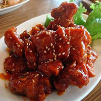

<nav class="navbar navbar-inverse" role="navigation">
	<div class="navbar-header">
		<button type="button" class="navbar-toggle" data-toggle="collapse" data-target="#navbartoggle">
			<span class="sr-only">Toggle navigation</span>
			<span class="icon-bar"></span>
			<span class="icon-bar"></span>
			<span class="icon-bar"></span>
		</button>

		<a class="navbar-brand" href="#">NoCoPe</a>
	</div>

	<div class="collapse navbar-collapse" id="navbartoggle" ng-controller="userController">
		<ul class="nav navbar-nav pull-right">
			<li>
				<a href="#signup" style="color:#FAFAFA;width:100%" class="btn btn-info" ng-show="{{!Logged}}"><span class="glyphicon glyphicon-user"></span> Sign up</a>
			</li>
			<li>
				<a href="#login" style="color:#FAFAFA;width:100%" class="btn btn-info"  ng-show="{{!Logged}}"><span class="glyphicon glyphicon-user"></span> Login</a>
			</li>

			<li>
				<a ng-click="logout()" style="color:#FAFAFA;width:100%" class="btn btn-danger" ng-show="{{Logged}}"><span class="glyphicon glyphicon-remove" ></span> Logout</a>
			</li>
		</ul>
	</div>
</nav>

<div class="container">
	<div ng-show="loading">Loading ...</div>
	<div ng-show="!loading" style="margin-top: 25%; margin-left: 25%">
		<div class="col-xs-12" style="list-style-type:none">

			<div style="font-size:20pt;color:black;">{{tool.name}}</div>

			

		</div>
	</div>
	<div>{{callBack | json}}</div>
</div>